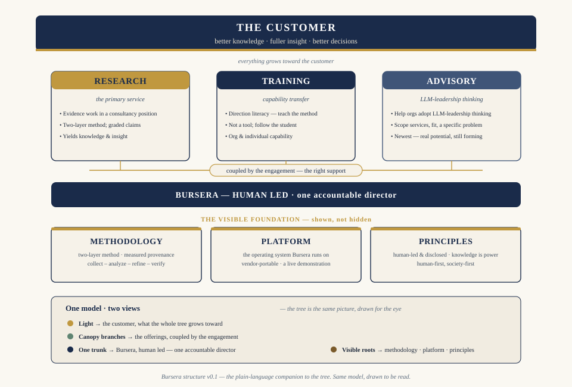

What makes the work different is that it is done in the open. The sources, the steps, the depth, and the accountable person are visible. We measure provenance rather than assert it, and we show where the evidence is strong, thin, or missing. The proof is the work itself — a transparent LLM operation, directed by an accountable person, produces work people trust, without pretending a human typed it.
What we do
Research · primary
Research
You bring a question your organization needs answered well — a market to understand, a claim to pressure-test, a decision that needs an evidence base under it. We build that base and return work you can act on, with the sources attached and the thin spots marked.
Capability transfer
Training
For teams that want the capability in-house, we teach the practice behind the work: how to direct an LLM the way you would direct a team — setting direction, reviewing critically, deciding when it is ready.
Newest
Advisory
Helping leaders size where these tools fit and build LLM-leadership thinking in their own organization. The three couple — an engagement usually draws on all of them.
The three couple: an engagement usually draws on more than one.
Why it is different
Every published piece carries the Bursera mark and a provenance record you can inspect — how the work was done, what it rests on, and who is accountable for it.
Human-led, disclosed
Every engagement is directed and approved by a named person — Hugh McCutchen. We don’t pretend a human typed it. We make the human’s judgment the point.
How the offerings fit

One model, two views — the offerings couple over one accountable trunk, on a foundation shown on purpose. Click to open the full graphic.
How the work is done
The full method is published on this site: the problem statement that anchors each engagement, the platform that holds the analysis together across days of work and hundreds of sources, and the verification loop findings pass before they leave the desk. Read it at Method.
Published work
The research examples are complete papers on data-lifecycle governance, platform architecture, and industry analysis. The essays describe how the work is done. Start with Research or Leadership.
Start here
The best first step is a short conversation about the question you are trying to answer. Reach us at hugh.mccutchen@burseraconsulting.com.